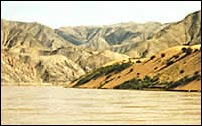

Yellow River
The Yellow River is the second longest river in China. Certain parts of the river are yellow in colour. It appears yellow because of the amount of yellow loess that it carries. The build up of loess also makes the river prone to flash flooding, leading to it sometimes being called 'China's Sorrow'.

|